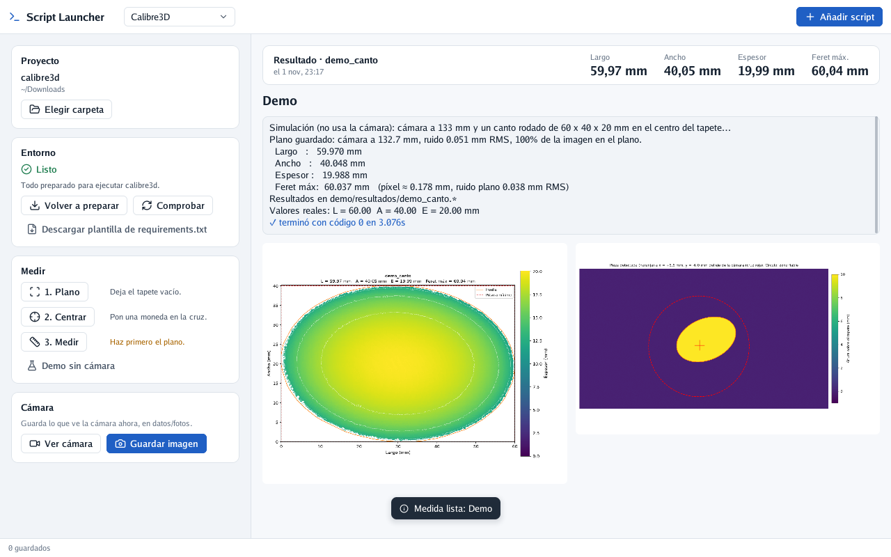

Esta guía es para dejar listo un ordenador recién sacado de la caja: instalar lo necesario, conectar la cámara RealSense D405 y hacer la primera medida con Script Launcher. No hace falta saber programar. Donde haya que escribir algo en la terminal, cópialo y pégalo tal cual.
Sigue solo los pasos de tu sistema: macOS (un Mac) o Fedora (Linux).
prueba.sh y otra carpeta llamada calibre3d.README.md del
proyecto).No hay que instalarlo a mano. Script Launcher usa Python 3.12 para hablar con la cámara y hacer las medidas, y lo instala él mismo con un botón (paso 5). No pide contraseña ni abre ningún instalador.
Si en el Mac aparece una ventana que ofrece instalar las «herramientas de desarrollo», ciérrala con Cancelar: no hacen falta.
Fedora
Linux no deja usar la cámara a un usuario normal hasta que se le dice que es de confianza. Abre la aplicación Terminal (búscala en el menú), pega estas tres líneas y pulsa Intro. Te pedirá tu contraseña:
sudo curl -L -o /etc/udev/rules.d/99-realsense-libusb.rules https://raw.githubusercontent.com/IntelRealSense/librealsense/master/config/99-realsense-libusb.rules
sudo udevadm control --reload-rules
sudo udevadm trigger
Después desconecta la cámara y vuelve a conectarla.
macOS
No hay que instalar nada. Si al ver la cámara aparece un error de permisos USB, mira Si algo falla.
Entra en la página de descargas: github.com/Itros97/script-launcher/releases/latest
macOS
Fedora
bash ~/Descargas/script-launcher-linux-x86_64/install.sh
Si tu sistema está en inglés, la carpeta se llama Downloads en vez de Descargas.
Copia la carpeta calibre3d a tu carpeta Documentos (en Fedora, Documentos; en Mac,
Documentos también). Así no se pierde entre las descargas.
Dentro de esa carpeta deben verse, al menos, prueba.sh y otra carpeta calibre3d. No hace falta
ningún requirements.txt: Script Launcher pone el suyo al preparar el entorno (en Mac,
requirements-macos.txt; en Linux, requirements-linux.txt).
prueba.sh) para entrar en ella, y pulsa Choose.Siempre que no sepas qué hacer, pulsa el botón azul: es el siguiente paso.

Calienta la cámara unos 10 minutos antes de empezar: la medida cambia un poco con la temperatura.
muestra_001, sin espacios) y pulsa Guardar. Arriba aparecen el largo, el ancho, el espesor
y el Feret; debajo, el mapa de calor.Todo se guarda en la carpeta del proyecto, en datos/resultados/. Las fotos de Guardar imagen
van a datos/fotos/.
| Lo que ves | Qué hacer |
|---|---|
| «La descarga de Python está dañada» | Se cortó la conexión a mitad. Pulsa Instalar Python 3.12 otra vez. |
| «No encuentro python3 y no puedo descargarlo» | Tu ordenador no es ni un Mac ni un Linux normal de 64 bits. Instala Python 3.12 desde python.org y vuelve a abrir Script Launcher. |
| «Sin proyecto» o «En esta carpeta no está el programa calibre3d» | Pulsa Elegir carpeta, entra en la carpeta calibre3d de fuera (la que tiene prueba.sh) y pulsa Choose. |
| «Esta carpeta tiene prueba.sh pero le falta la carpeta calibre3d/» | Falta parte del proyecto: vuelve a copiar la carpeta completa. |
| «Incompleto» con «Falta la librería…» | Pulsa Preparar entorno otra vez. Si se repite, añade la librería que dice al archivo que pone «Se instalará…» en la tarjeta Entorno (por ejemplo requirements-macos.txt). |
En Mac, la instalación dice que no encuentra una versión de pyrealsense2 |
El proyecto tiene un requirements.txt antiguo, solo para Linux. Pulsa Plantilla macOS y luego Preparar entorno: a partir de ahí se instala requirements-macos.txt y el otro se deja tal cual. |
| La instalación falla con errores de red | Comprueba la conexión a internet y pulsa Preparar entorno otra vez. |
| «No se encuentra ninguna RealSense conectada» | Conecta la cámara directamente al ordenador, sin hub. En Fedora, repite el paso 2 y reconecta la cámara. |
| En Mac, un error de permisos USB al usar la cámara | Por verificar en un Mac: en algunas versiones de macOS la librería de la cámara necesita permisos de administrador. Avisa a quien te pasó el programa. |
En Mac, la instalación dice que no encuentra pyrealsense2-macosx |
Esa librería necesita macOS 15 o posterior: actualiza el Mac en Ajustes del Sistema → General → Actualización de software y pulsa Preparar entorno otra vez. |
| En un Mac con Intel, «Ver cámara» dice que no está instalado pyrealsense2 | La librería de la cámara no existe para Mac con Intel: ahí la cámara no funciona. La Demo sin cámara sí. |
| La medida da avisos en naranja («Pieza lejos del centro»…) | Lee el aviso: suele bastar con centrar la pieza o repetir el plano. |
Nota: la parte de macOS no se ha probado todavía en un Mac con la D405. Si algo no coincide con lo que ves, apúntalo y pásalo para corregir la guía.